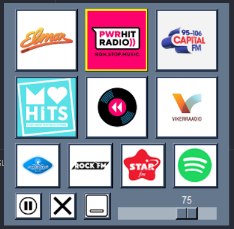
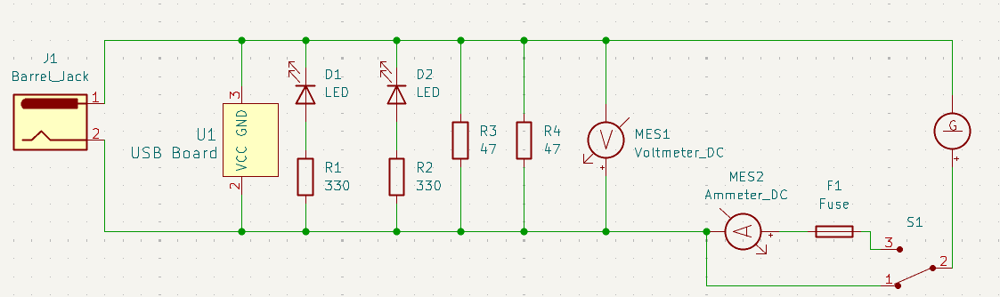
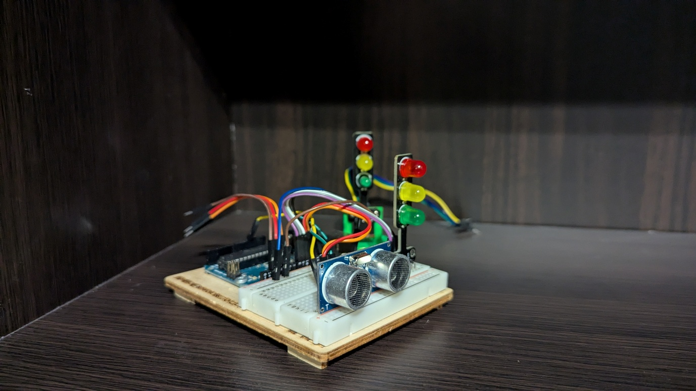
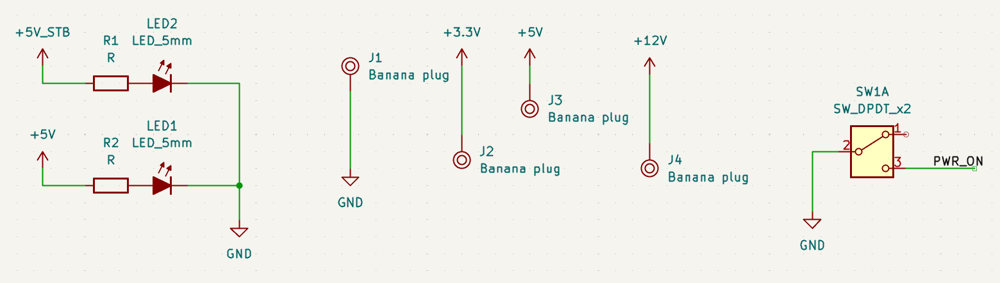
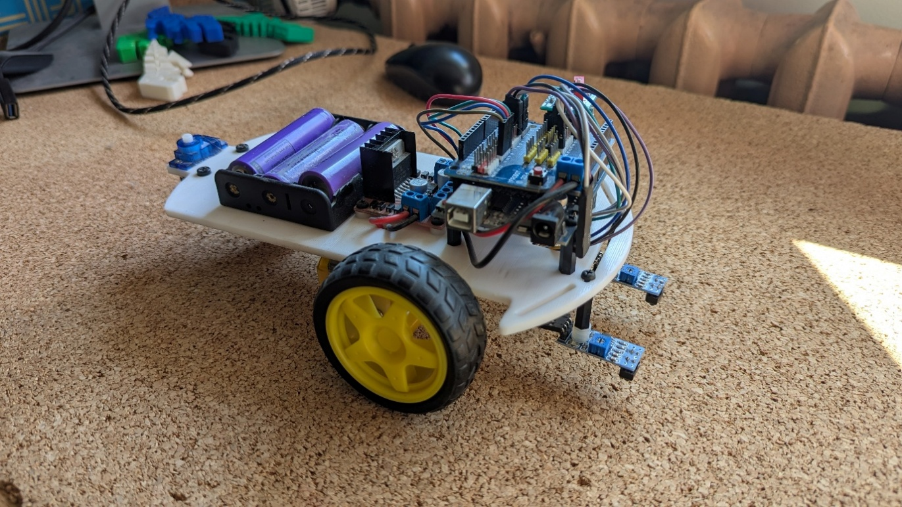
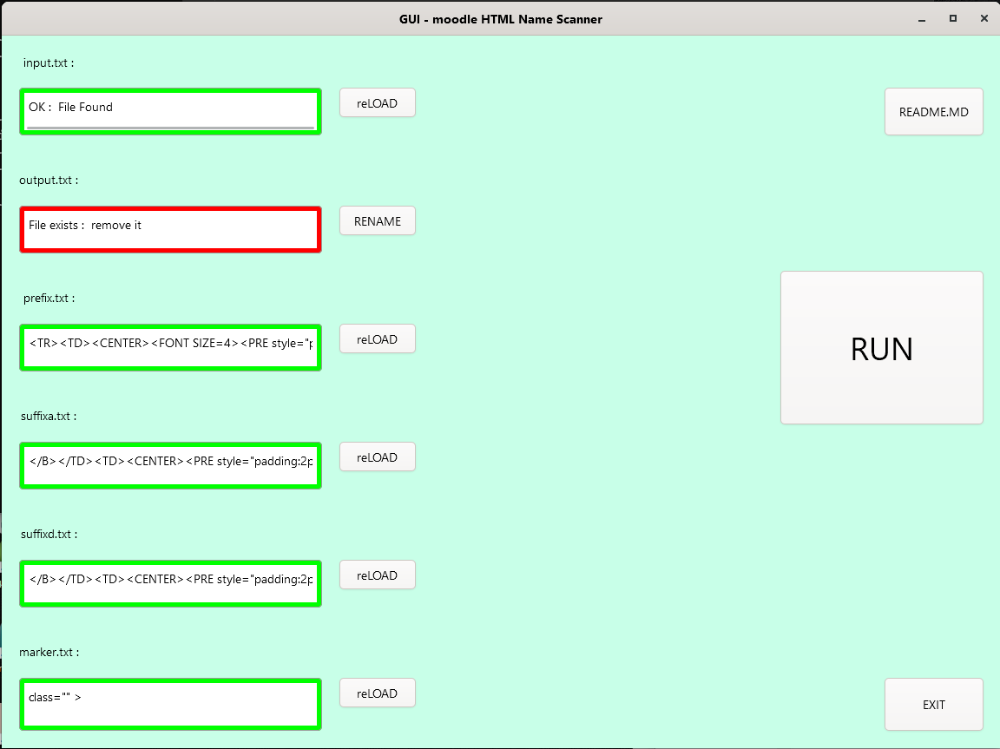
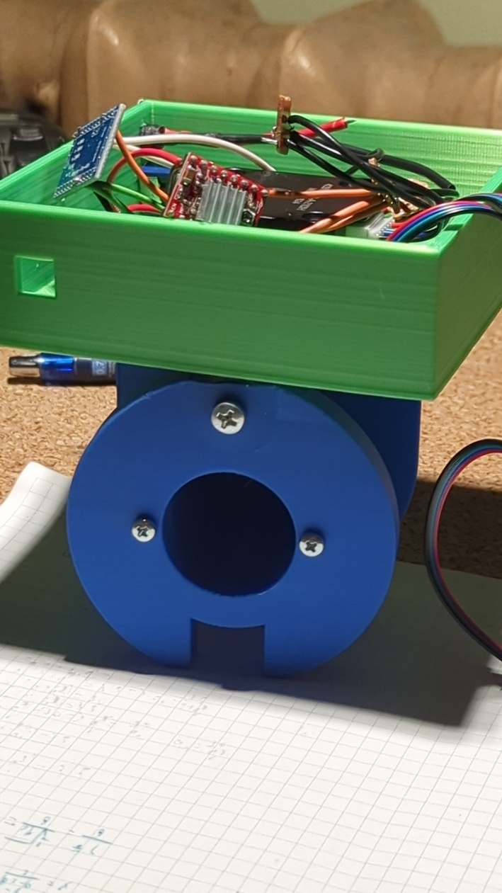
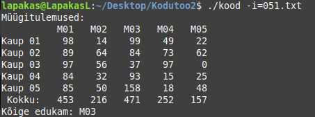

PortfoolioPortfolio
Joosep Fingling
Valik minu projekte — elektroonika, robootika, 3D-printimine, tarkvara ja rohkelt praktilist meisterdamist. A selection of my projects — electronics, robotics, 3D printing, software, and plenty of hands-on building.
ProjektidProjects 19

Raadionupud (RadioButtons)Radio Buttons (RadioButtons)
Luua lihtne ja mugav programm internetiraadio jaamade kuulamiseks ning nende vahel kiireks vahetamiseks.A simple, convenient app for listening to internet radio stations and switching between them quickly.

BT-adapterBT adapter
Anda vanale autole, millel on vaid kassetimängija, Bluetooth-toega muusikamängija (kasseti kujul).Give an old car that only has a cassette player a Bluetooth music player — in the shape of a cassette.

Gümnaasiumi praktiline töö (PRT)High-school practical project (PRT)
Tutvuda erinevate auto generaatoritega ning luua õppevahend energia muundamise demonstreerimiseks.Get to know different automotive generators and build a teaching aid that demonstrates energy conversion.

Liiklusrobot (TrafficBot)Traffic robot (TrafficBot)
Luua liiklusrobot, mis reageerib valgusfoori signaalidele, mis omakorda reageerivad liikluse hulgale.Build a traffic robot that reacts to traffic-light signals, which in turn react to the amount of traffic.

Toiteploki modifitseeriminePower-supply modification
Modifitseerida vana arvuti toiteplokki, et saada lihtsaks kasutuseks standardsed pinged.Modify an old computer power supply to provide standard voltages for easy use.

Laugen Motorsport fännitootedLaugen Motorsport fan merchandise
Luua fännitooteid Laugen Motorsporti fännidele.Create fan merchandise for Laugen Motorsport supporters.
Audi 80 parandamineAudi 80 restoration
Hoida vana auto töökorras ja turvaline igapäevaseks kasutamiseks.Keep an old car running and safe for everyday use.
Kõlar ja EQSpeaker & EQ
Luua kaasaskantav kõlar võimendi, ekraani ja ekvalaiseriga.Build a portable speaker with an amplifier, a display and an equaliser.
Boe-Bot voolumõõtjaBoe-Bot current meter
Luua lihtsalt kasutatav laiendusplaat, mille saab asetada Boe-Boti peale, et mõõta erinevate komponentide voolu.Build an easy-to-use expansion board that mounts on top of the Boe-Bot to measure the current draw of its components.

RobotiplatvormRobot platform
Luua modulaarne robotiplatvorm, millele saab lihtsalt lisada erinevaid sensoreid ja laiendusi.Create a modular robot platform to which different sensors and extensions can easily be added.
Robot telefoni puldigaRobot with a phone remote
Kasutada telefoni güroskoopi ja muuta telefon roboti puldiks.Use a phone's gyroscope and turn the phone into the robot's remote control.
Joonejälgija robotLine-following robot
Luua lihtne joonejälgija roboti katsetamiseks.Build a simple line follower to experiment with the robot.
Arduino signaaligeneraatorArduino signal generator
Luua signaaligeneraator, kasutades Arduinot ja takistite redelit.Build a signal generator using an Arduino and a resistor ladder.

KJU (NameExporter)KJU (NameExporter)
Luua õppejõule tarkvaraline lahendus, mis töötleb Moodle'ist saadud tudengite nimekirju ning esitab need soovitud vormingus.Create a software tool for a lecturer that processes student lists exported from Moodle and outputs them in the desired format.
Liikumist toetav mängupultMovement-based game controller
Luua mängupult, mis sunnib mängijat liikuma.Create a game controller that forces the player to move.
Lennusimulaatori kontrollerFlight-simulator controller
Luua soodne ja funktsionaalne lennusimulaatori juhtpult.Build an affordable, functional flight-simulator control panel.

KellalaadijaWatch winder
Luua mehaanilisele kellale laadimisseade, et vältida selle pidevat kandmist.Create a winding device for a mechanical watch so it doesn't have to be worn constantly.
FilmiladuFilm warehouse
Luua lihtne andmebaasisüsteem filmide ja arvustuste haldamiseks.Build a simple database system for managing films and reviews.

Müügitulemuste kalkulaatorSales-results calculator
Analüüsida müügiandmeid ja väljastada tulemused tekstina.Analyse sales data and output the results as text.